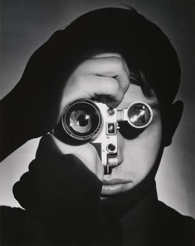

01
HTML
Menyusun struktur halaman web yang rapi dan semantik.
Struktur web90%
Halo, saya
Saya sedang mengembangkan kemampuan di bidang teknologi dan pembuatan website. Saya percaya setiap hal besar dimulai dari rasa ingin tahu dan kemauan untuk terus belajar.

01 — TENTANG SAYA
Saya adalah pribadi yang senang mempelajari hal baru, terutama teknologi dan pengembangan website. Portfolio ini menjadi ruang untuk mendokumentasikan proses belajar, karya, dan perkembangan saya.
02 — KEAHLIAN
Kemampuan yang sedang saya pelajari dan kembangkan melalui latihan serta proyek pribadi.
Menyusun struktur halaman web yang rapi dan semantik.
Membangun tampilan, tata letak, dan responsivitas website.
Menambahkan interaksi dan perilaku dinamis pada halaman.
Persentase merupakan gambaran penilaian kemampuan pribadi, bukan hasil sertifikasi.
03 — PROYEK PILIHAN
Eksplorasi awal membangun halaman website dengan HTML dan CSS.
Website untuk memperkenalkan profil, keahlian, dan karya saya.
Latihan membangun fitur interaktif menggunakan JavaScript.
04 — KONTAK
Saya terbuka untuk berdiskusi, bertukar ide, dan menjajaki kesempatan baru.
Mulai percakapan ↗